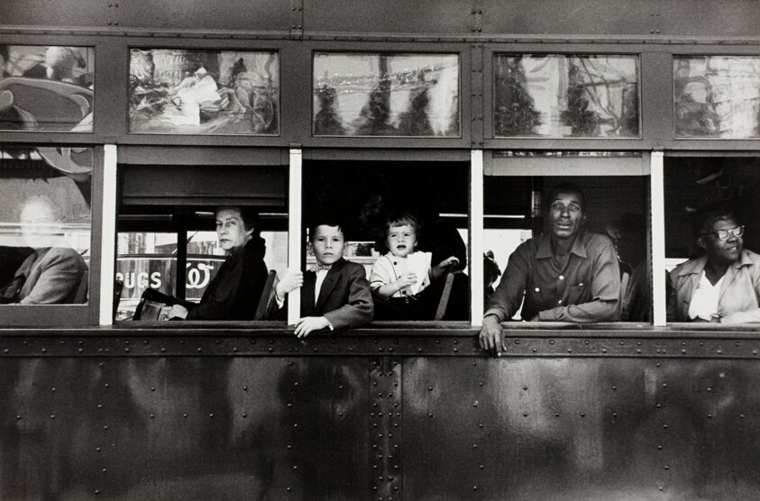

Trolley, New Orleans
Robert Frank · 1955 · Gelatin silver print · 21.9 × 33.2 cm · Art Institute of Chicago
In copyright. Look and learn: shown for study, not for download.
Robert Frank, born in Zürich, was thirty when a Guggenheim Fellowship in 1955 paid for him to cross the United States by road. Over two years he made about 28,000 exposures and kept 83 for The Americans. He had trouble finding an American publisher; the book came out in Paris in May 1958 and in New York in 1959, with an introduction by Jack Kerouac. Frank changed the cropping of many pictures for every new edition.